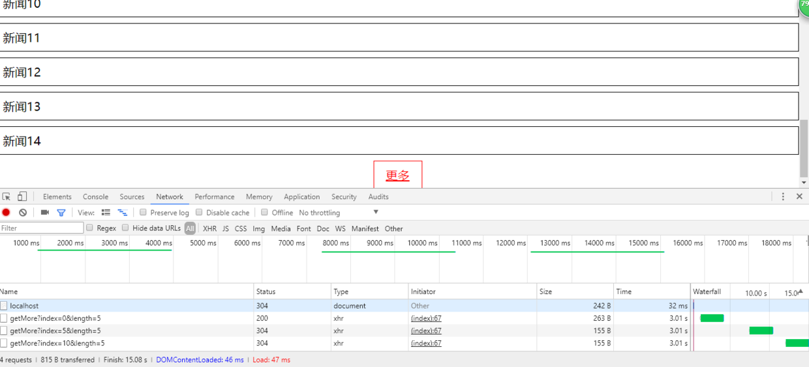

1.ajax是什么？有什么用？
ajax:Asynchronous Javascript +XML，作用是向服务器请求数据而不用刷新页面
优点：
- 它能在不刷新整个页面的前提下与服务器通信维护数据，更新数据而不需要刷新页面
- 因为可以选择异步通信，它与服务器使用异步的方式通信，不会打断用户的操作（卡死页面）
- 可以将后端服务器的一些工作转移给客户端，利用客户端限制的能力来处理，减轻了服务器的负担。
2.前后端开发联调需要注意哪些事情？后端接口完成前如何mock数据？
前后端开发联调注意事项：
- 约定数据：需要传输哪些数据，数据类型是什么
- 约定接口：确定接口名称，请求格式以及响应格式
- 根据这些约定整理成接口文档
mock数据：
- 可以根据接口文档，使用假数据来验证我们制作的页面响应和接口是否正常
- 可以用xampp进行模拟
- 也可以使用server-mock
3.点击按钮，使用ajax获取数据，如何在数据到来之前防止重复点击？
设置一个状态锁1
2
3
4
5
6
7
8
9
10
11
12
13
14
15
16
17
18
19
20
21
22
23
24
25
26
27
28
29
30
31
32
33var newsBox = document.querySelector("#news-box")
var btn = document.querySelector("#btn")
var newsIndex = 0
var canIclick = true
btn.addEventListener("click",function(){
if(!canIclick){
return
}
var xhr = new XMLHttpRequest()
xhr.onreadystatechange = function(){
if(xhr.readyState === 4){
if(xhr.status === 200 || xhr.status === 304){
var results = JSON.parse(xhr.responseText)
var fragment = document.createDocumentFragment()
for(var i = 0; i < results.length; i++){
var node = document.createElement("li")
node.innerText = results[i]
fragment.appendChild(node)
}
newsBox.appendChild(fragment)
newsIndex += 5
}else{
alert('出错了')
}
canIclick = true
}
}
xhr.open('get','/getMore?index='+newsIndex+'&length=5',true)
xhr.send()
canIclick = false
})
4.实现加载更多的功能，后端在本地使用sever-mock模拟数据
在3中贴出了前端的代码，一下是后端的代码1
2
3
4
5
6
7
8
9
10
11
12
13router.get('/getMore', function(req,res){
var curIndex = req.query.index
var len = req.query.length
var data = []
for(var i = 0; i < len; i++){
data.push('新闻'+(parseInt(curIndex) + i))
}
setTimeout(function(){
res.send(data);
},3000) //此处的setTimeout是模拟网速很慢时，服务器传回数据较慢时的场景，验证防止多次点击是否生效
})
